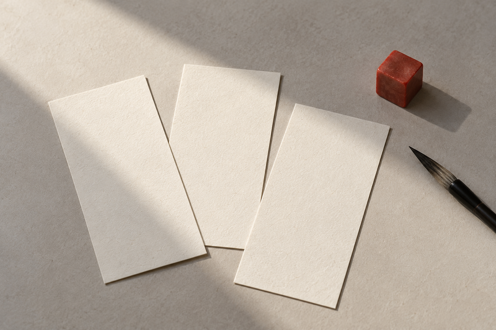

12 款素笺模板
横排与竖排，自在切换
字体、落款、印章，细细斟酌
保存成图，留在相册
留白，也是表达。
不喧宾夺主的底色与线条，把目光留给文字本身。
12 款模板
预览由小程序同源绘制逻辑生成，点击模板即可试写。
你的文字，值得这一页。
不必等到文思泉涌，从一句想留下的话开始。
素纸720 × 900
实时作品预览，非小程序界面截图

不是每一句，
都要匆匆划过。
读到的诗，想说的话，突然浮现的念头。
让它们从聊天框、备忘录里走出来，
成为一张可以认真收藏的字签。
一页成图
在小程序中生成作品，保存到系统相册。
首次保存时，需要你的相册授权。
留在本机
草稿与作品集保存在当前设备。
暂不支持云端备份或跨设备同步。
再多了解一点。
怎样使用字签小程序？
使用微信扫描下方的小程序码；在手机上可以先保存码图，再到微信扫一扫中从相册选择。是否可访问，以微信扫码结果和小程序实际发布状态为准。
网页体验和小程序有什么不同？
网页复用小程序当前 12 款模板与作品绘制逻辑，可试写和下载 720 × 900 的 JPEG 图片。网页另外提供 5 款自托管开源字体；小程序仍使用设备系统字库。完整的草稿、作品集和相册保存流程，请在小程序中使用。网页输入只在当前页面内处理，刷新不会保留。
手机切换字体需要等待吗？
首次选择字体需要从本站加载字库，页面会显示加载状态，加载完成后自动重绘预览。若网络失败可点击重试，加载期间暂不允许下载，以免保存成旧字体。部分生僻字可能由系统备用字体补足。
作品会自动同步到其他设备吗？
目前不会。小程序的草稿与作品集只保存在本机，清理小程序数据或更换设备可能丢失。喜欢的作品建议另存到相册。
下一页，
写你想写的。
打开微信扫一扫，开始你的字签。